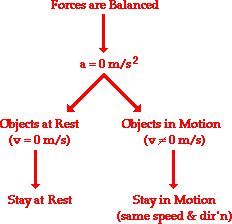
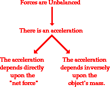
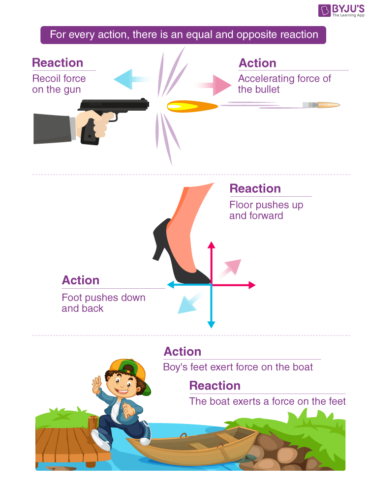

He is well known for his discoveries in optics (white light
composition) and mathematics (calculus), it is his formulation of
the three laws of motion, the basic principles of modern physics,
for which he is most famous.
When
He was born on December 25, 1642 and Died on March 20 , 1727 Sir
Isaac Newton worked in many areas of mathematics and physics. He
developed the theories of gravitation in 1666 when he was only 23
years old. In 1686, he presented his three laws of motion in the
“Principia Mathematica Philosophiae Naturalis.”
Why
Isaac Newton, as any scientist is supposed to be, was a very curious
man. He would not take things around him for a given and started wondering
and investigating what makes objects move. That is how he thought up his
three laws that describe the relationship between an object’s motion and the
forces that make it move or stop. These three laws laid the foundation for
Newtonian mechanics — a physical theory that describes the moving of visible
objects of different sizes: from tiny ones to super huge as spacecraft, planets,
and galaxies.
Who
Isaac Newton was a English physicist and mathematician who was the
culminating figure of the Scientific Revolution of the 17th century.
Inertia
man. He would not take things around him for a given and started wondering
and investigating what makes objects move. That is how he thought up his
three laws that describe the relationship between an object’s motion and the
forces that m
Acceleration
man. He would not take things around him for a given and started wondering
and investigating what makes objects move. That is how he thought up his
three laws that describe the relationship between an object’s motion and the
forces that m
Action and Reaction
man. He would not take things around him for a given and started wondering
and investigating what makes objects move. That is how he thought up his
three laws that describe the relationship between an object’s motion and the
forces that man ban what ren mas perfect ddiscuss three hours bruh
What are the three laws of motion?
Inertia
Newton's First Law
An object at rest remains at rest, and an object in motion remains in motion at
constant speed and in a straight line unless acted on by an unbalanced force.
Newton’s first law states that every object will remain at rest or in uniform motion in a straight line
unless compelled to change its state by the action of an external force. This tendency to resist changes
in a state of motion is inertia. If all the external forces cancel each other out, then there is no net force
acting on the object. If there is no net force acting on the object, then the object will maintain a
constant velocity.
This is what the law of inertia states:
Unless you push or pull (apply a force on) an object, it will remain at rest or in uniform.
Any type of force can be applied to it, and it does not necessarily have to come from a human.

Examples:
Book on a Table (An object at rest remains at rest):
A book sitting still on a table will remain at rest unless someone pushes it or another force acts on it
(like
gravity pulling it down).
Explanation: The book's inertia keeps it stationary until a force acts on it.
Hockey Puck Sliding on Ice (an object in motion remains in motion at constant speed and in a straight line):
A hockey puck will keep sliding on a smooth ice surface at a constant speed until forces like friction or a
player's stick act on it to slow it down.
Explanation: The puck continues its motion due to inertia, but external forces (friction, stick) change its
motion.
Seatbelt in a Car (unless acted on by an unbalanced force):
When a car suddenly stops, your body continues moving forward. The seatbelt applies a force to stop you,
preventing you from continuing at the car’s speed.
Explanation: Your body has inertia and wants to keep moving, but the external force (seatbelt) stops you.
Examples of inertia involving aerodynamics:
The motion of an airplane when a pilot changes the throttle setting of an engine.
The motion of a ball falling down through the atmosphere.
A model rocket being launched up into the atmosphere.
The motion of a kite when the wind changes.
Acceleration
Newton's second Law
Newton's second law of motion pertains to the behavior of objects for which all existing forces are not
balanced. The second law states that the acceleration of an object is dependent upon two variables - the
net
force acting upon the object and the mass of the object. The acceleration of an object depends directly
upon
the net force acting upon the object, and inversely upon the mass of the object. As the force acting upon
an
object is increased, the acceleration of the object is increased. As the mass of an object is increased,
the
acceleration of the object is decreased.

The second law states:
The acceleration of an object is connected to the force which is acting on it. The object speeds up due to
the
force acting on it.
This is why this law has a formula:
a = F / m,
in which:
a — is the acceleration that is measured in meters per second squared (m/s2). It means that if an object
accelerates at 1 m/s2, its speed is increasing by 1 meter per second every second.
F — is a force that is measured in newtons (yes, he was so cool they named this unit of measurement in his
honor)
m — is an object’s mass that is measured in kilos.
Examples:
Pushing a Stroller
A light stroller moves faster with a little push, but a heavier stroller needs more force to move at the
same
speed.
Explanation: The stroller’s acceleration depends on its mass and the force applied.
2. Throwing a Ball
Throwing a small tennis ball is easier and faster than throwing a heavy basketball with the same effort.
Explanation: The lighter tennis ball requires less force to accelerate, while the heavier basketball resists
motion more due to its greater mass.
3. Kicking a Ball
A stronger kick makes the ball go farther because more force means more acceleration.
Explanation: Greater force increases the ball’s acceleration, demonstrating the direct relationship between
force and motion.
Action and Reaction
Newton's Third Law
His third law states that for every action (force) in nature there is an equal and
opposite reaction. If object A exerts a force on object B, object B also exerts an equal and opposite
force
on object A. In other words, forces result from interactions

This law signifies a particular symmetry in nature: forces always occur in pairs, and one body cannot exert
a
force on another without experiencing a force itself. In the next few sections, let us learn Newton’s third
law in detail.
That is why this law is called the the law of action and reaction